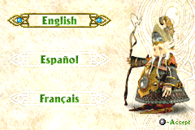

Arthur and the Invisibles (USA) (En,Fr,Es)
EEPROM 4K Save Format Spec gbakit Built-In
Cartridge Identity
- Game Code
B2NE(FamilyB2N)- Header Title
ARTHUR- Maker / Revision
70/ rev0- ROM Size
- 16.0 MiB (16,777,216 B)
- Save Media
EEPROM 4K- SHA-256
c17e876e6caf7300b12607265ebd6f3ec4babc507dceae2e7c606cf732bfd9bb- Engine / SDK Group
comm-003(128 families)
Screenshots

Battery Save Format Specification
Open Full Save Format SpecDownload Sample .sav (512 B)Download save-format.json
- Specification Coverage
- 16 mapped fields · 2 verified checksum(s) · Confidence: MEDIUM
- gbakit Built-In Support
- Built-in (B2NE)
- Emulator Verification
- Checksum enforced: Yes · Repaired save accepted: Yes
gbakit save verify B2NE save.sav
gbakit save decode B2NE save.sav
gbakit save fix B2NE damaged.sav -o repaired.savObserved Battery Save Layout
- Fill Byte & Active Size
0x00fill · 137–138 / 512 B active (entropy 0.74 bits/B)- Active Offset Ranges
0x0,0x2–0x5,0x7,0xD–0xF,0x17,0x8D–0x8F,0x97,0x10D–0x10F, +2 more (10 total)- ASCII Magic / Headers
- None detected
- Observed Variable Regions
- 2 bytes across 2 spans:
0x5,0x7 - Candidate Checksum/Counter Spans
0x5,0x7- Integrity Check
- Confirmed at
0x5
ROM Assets, Compression & Audio
- BIOS Compression
- LZ77 (
0x10): 1 streams · RLE (0x30): 0 streams - ROM Pointer Tables
- 9 tables (0 pointing to validated compressed streams)
- SDK Backup Tags
EEPROM_V124
Hardware MMIO Subsystems
dma_transfer0x8298a60ppu_display0x827732c,0x827c070,0x8282fac,0x82832e4,0x8283d8c,0x8284594,0x8284a18,0x8284c14,0x8284d2c,0x8285074(+6 more)
Regional Variants & Revisions (Family B2N)
- Arthur and the Minimoys (Europe) (En,Fr,De,Es,It,Nl) (
B2NP, 16 MiB)